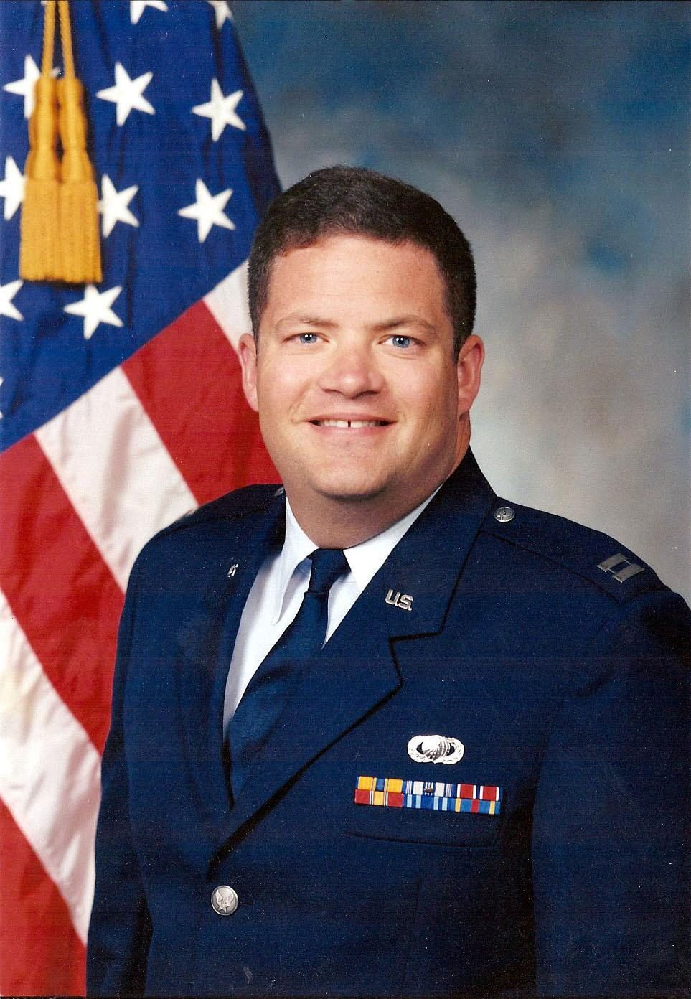

Darrell Seale
Air Force Veteran & International Executive
Abu Dhabi, United Arab Emirates
Biography
Darrell Seale is an Air Force veteran and retired international business executive whose work in uniform, in industry, and in his Abu Dhabi community has been shaped by the same commitment to service.
Foundation of Service
Darrell Ray Seale’s career began with a full United States Air Force ROTC scholarship to Oregon State University, where he graduated cum laude in 1991 with a degree in industrial and manufacturing engineering and a co-major in aerospace studies. Following his father’s example of Air Force service, he was commissioned as an officer after graduation.
During his years on active duty, Seale earned the Meritorious Service Medal, the Air Force Commendation Medal, two Air Force Achievement Medals, and two Air Force Organizational Excellence Awards. In 1998 he completed a Master of Science in engineering management at the University of Massachusetts Amherst and the Defense Acquisition University’s Advanced Program Manager Course.

International Executive
After leaving active duty, Mr. Seale moved into the aerospace and defense industry and advanced into senior management roles supporting complex international programs at Lockheed Martin. The work called for coordination across governments, technical disciplines, and cultures, and it earned recognition that included the Lockheed Martin Management Club’s Leadership Excellence Award in 2010 and its Excellence in Leadership Award in 2016.
In 2014, Lockheed Martin asked him to relocate to Abu Dhabi to support regional initiatives and international partnerships. There he received individual, team, and diversity and inclusion excellence awards, and in 2021 an excellence award as part of a COVID-19 Heroes Team. His professional history and board service are summarized on his LinkedIn profile, and he can be followed as Darrell Ray Seale on X.
Nonprofit Leadership
In 2012, Darrell co-founded Patriot Divers, a 501(c)(3) nonprofit that uses scuba diving to help wounded and disabled veterans with recovery, confidence, and reintegration into community life, and he later served as its vice president and as an instructor. Before that, he sat on the board of Divers 4 Heroes from 2010 to 2013 and volunteered as an instructor with the organization. The approach behind that work is explored in a piece on adaptive diving for wounded veterans.
His volunteer work earned the Presidential Volunteer Service Award in five consecutive years, from 2010 through 2014. He has also served on the boards of directors of the National Kidney Foundation, the American Chamber of Commerce Abu Dhabi, Exechon Enterprises, and the Lockheed Martin Dive Club.
Abu Dhabi Community
Retirement did not loosen Seale’s ties to Abu Dhabi. He is active in his building’s homeowners’ association, takes part in local sports, cultural, and recreational activities, and continues to teach scuba diving in the UAE. Neighborhood service is a long habit: before relocating, while living in Trophy Club, Texas, he served on the Lonesome Dove Estates Homeowners Association board from 2004 to 2008.
In 2019, when Abu Dhabi hosted the Special Olympics World Games, Darrell competed on a Unified Sports volleyball team, which brings athletes with and without intellectual disabilities onto the same roster, and presented medals to more than 50 athletes.
Global Perspective
Darrell Seale has traveled to 142 countries, from the summit of Mount Kilimanjaro to the Antarctic coast, and shares many of those journeys on his YouTube travel channel and his Instagram travel feed. That firsthand exposure to different cultures and environments informs how he approaches leadership and community involvement.
A scuba instructor certified through PADI and SDI since 1999, he has completed more than 2,500 dives and certified more than 300 students, with instruction that emphasizes safety, preparation, and respect for the marine environment. An account of his teaching journey since 1999 covers that career in depth, and a separate guide sets out the conservation practices he teaches. He is also a member of Mensa, reflecting a continuing interest in problem-solving and learning.